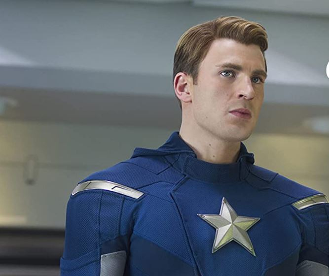
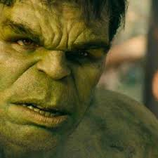
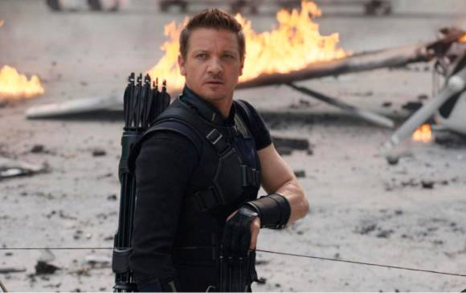
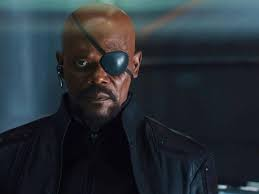
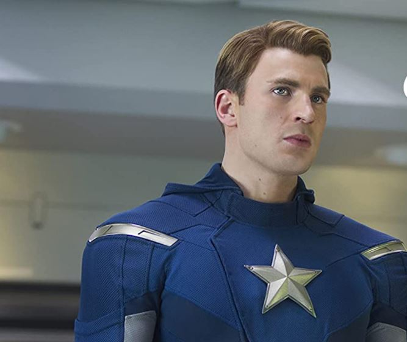
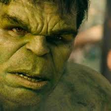
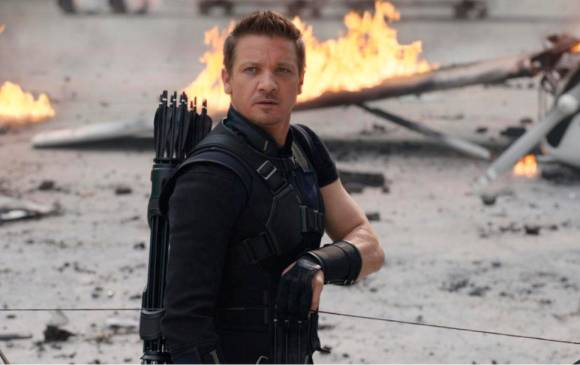
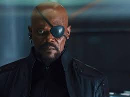

Batalla de New York
La Batalla de Nueva York, también conocida como el Ataque a Nueva York, el Ataque a Midtown Manhattan, la Crisis de Manhattan y El Incidente, fue una gran batalla entre los Vengadores y Loki con su ejército Chitauri que se desarrolló en Manhattan, en la ciudad de Nueva York. Era, según el plan de Loki, la primera batalla para subyugar a la Tierra, pero las acciones de los Vengadores neutralizaron la amenaza de los Chitauri antes de que pudiera continuar con la invasión. Los Vengadores, que habían sido reunidos por S.H.I.E.L.D., fueron inspirados a luchar por la aparente muerte de Phillip Coulson a manos de Loki. Esta batalla puso fin a la Invasión Chitauri.
 Black Widow

Capitan America

Hulk

Hawkeye

Nick Fury
Black Widow

Capitan America

Hulk

Hawkeye

Nick Fury